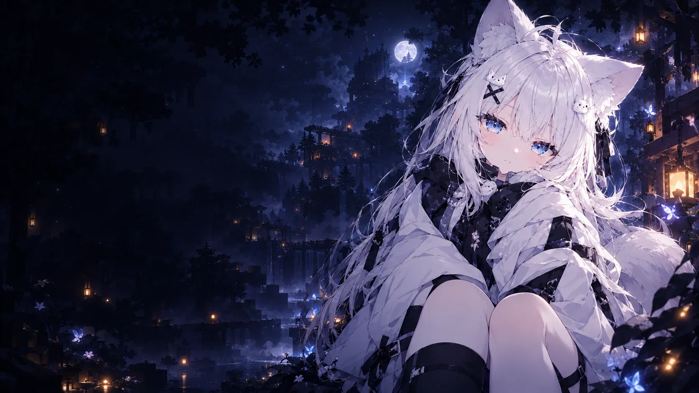
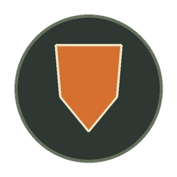

Minecraft Bedrock · Brasil
Uma toca acesa na floresta de blocos.
A Vulpus é um servidor com plataforma própria, uma IA que lembra de cada jogador e uma regra que não se dobra: nada que dá vantagem se compra.
- Endereço
- Agora
- – jogando · – no Discord
- Onde jogar
- Celular, console e Windows
Por onde começar
Escolha o seu caminho.
- JogarEndereço, porta e o passo a passo para entrar no servidor.
- Ver a comunidadeQuem está jogando agora, rankings, mural e páginas dos jogadores.
- Conhecer a KizaA raposa assistente da Vulpus: o que ela faz e como ajuda o seu servidor.
- Minha áreaSua conta, sua página, seus talentos e o Painel da Kiza.
Cada coisa no seu cantinho
– jogando agora
Nível
- carregando…
Duelos
- carregando…
O princípio
Aqui, ninguém compra vantagem.
Cada Cauda vem de uma conversa, de uma construção, de um dia em que você apareceu. Quem apoia paga o servidor, não a vitória.
Sem pay-to-win
Apoio dá estilo e reconhecimento no Discord. Poder dentro do jogo, nunca.
Feito à mão
Bot, ponte e addons desenvolvidos para a Vulpus. Nada comprado pronto.
Gente antes de número
Moderação presente, regras claras e uma IA que sabe quem você é.

Discord e jogo
Uma conversa só, nos dois lugares.
O chat do servidor aparece no Discord, e o do Discord aparece no jogo. Vincule a conta uma vez e Caudas, XP e conversa passam a ser os mesmos nos dois lugares.
No jogo
<luma> alguém tem ferro sobrando?
pedro entrou no jogo
<pedro> tenho, passa na base
No Discord
lumaalguém tem ferro sobrando?
pedro entrou no jogo
pedrotenho, passa na base
Exemplo ilustrativo.
Para explorar
O que mais tem na toca.

Kiza
A mascote e IA da comunidade. Entende o contexto do chat, conhece o servidor e guarda só o que você contar.
Conhecer
Coleção
Uma figurinha grátis por dia, ilustrações originais e um álbum para completar.
Ver as figurinhas
Árvore de Talentos
Cada nível de habilidade no jogo vira ponto para liberar VeinMiner, Tree Capitator e bônus.
Abrir a árvore
Kitsune
Apoie o servidor e ganhe estilo: cores no nome, enfeites e espaços no Discord. Nunca vantagem.
Ver o plano
Como entrar
Quatro passos até a toca.
Entre no Discord
Aceite as regras e o resto da toca se abre.
Pegue o endereço
plus-01.bedhosting.com.br, porta27151.Adicione no jogo
Minecraft, Jogar, Servidores, Adicionar servidor.
Vincule a conta
Na primeira entrada aparece um código. Digite com
/minecraft vincular.
A toca está acesa.
Falta só você para a próxima cauda.